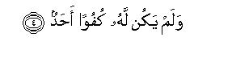

بسم الله الرحمن الرحيم
Sayyid Abul Ala Maududi - Tafhim al-Qur'an - The Meaning of the Qur'an
 112.
Surah Al Ikhlas (The Purity)
112.
Surah Al Ikhlas (The Purity)
Al-Ikhlas is not merely the name of this Surah but also the title of its contents, for it deals exclusively with Tauhid. The other Surahs of the Quran generally have been designated after a word occurring in them, but in this Surah the word Ikhlas has occurred nowhere. It has been given this name in view of its meaning and subject matter. Whoever understands it and believes in its teaching, will get rid of shirk (polytheism) completely.
Whether it is a Makki or a Madani Surah is disputed, and the difference of opinion has been caused by the traditions which have been related concerning the occasion of its revelation. We give them below ad seriatim:
Hadrat Abdullah bin Masud has reported that the Quraish said to the Holy Prophet (upon whom be be peace): "Tell us of the ancestry of your Lord." Thereupon this Surah was sent down. (Tabarani).
Abul Aliyah has related on the authority of Hadrat Ubayy bin Kab that the polytheists said to the Holy Prophet (upon whom be peace): “Tell us of your Lord's ancestry." Thereupon Allah sent down this Surah. (Musnad Ahmad, Ibn Abi Harim, Ibn Jarir, Tirmidhi, Bukhari in At-Tarikh, Ibn al-Mundhir, Hakim, Baihaqi). Tirmidhi has related a tradition on the same theme from Abul Aliyah, which does not contain any reference to Hadrat Ubayy bin Kab, and has declared it to be more authentic.
Hadrat Jabir bin Abdullah has stated that a bedouin (according to other traditions, some people) said to the Holy Prophet (upon whom be peace): "Tell us of your Lord's ancestry." Thereupon Allah sent down this Surah.(Abu Yala, Ibn Jarir, Ibn al-Mundhir, Tabarani in Al-Ausat, Baihaqi, Abu Nuaim in Al-Hilyah).
Ikrimah has related a tradition form Ibn Abbas, saying that a group of the Jews, including Kab bin Ashraf, Huyayy bin Akhtab and other, came before the Holy Prophet (upon whom be peace) and said: "O Muhammad (upon whom be Allah's peace and blessings), tell us of the attributes of your Lord, who has sent you as a Prophet." Thereupon Allah sent down this Surah. (Ibn Abi Hatim, Ibn Adi, Baihaqi in Al-Asma was-Sifat).
In addition to these, some other traditions also have been cited by Ibn Taimiyyali in his commentary of Surah Al-Ikhlas, which are as follows;
Hadrat Anas has stated that some Jews of Khaiber came before the Holy Prophet (upon whom be peace) and they said: "O Abul Qasim, Allah created the angels from light, Adam from rotten clay, Iblis from the flame of fire, the sky from smoke, and the earth from the foam of water. Now tell us about your Lord (of what He is made)." The Holy Prophet (upon whom be peace) did not give any reply to this question. Then Gabriel came and he said: "O Muhammad, say to them: Huwa Allahu ahad."
Amir bin at-Tufail said to the Holy Prophet: "O Muhammad, what do you call us to?"The Holy Prophet replied: "To Allah." Amir said, "Then, tell us of what He is made, whether of gold, silver, or iron?" Thereupon this surah was sent down.
Dahhak, Qatadah and Muqatil have stated that some Jewish rabbis came before the Holy Prophet, and they said: "O Muhammad, tell us what is your Lord like, so that we may believe in you. Allah in the Torah has sent down His description. Kindly tell us of what He is made, what is His sex, whether He is made of gold, copper, brass, iron, or silver, and whether He eats and drinks. Also tell us from whom He has inherited the world, and who will inherit it after Him." Thereupon Allah sent down this Surah.
Ibn Abbas has reported that a deputation of the Christians of Najran along with seven priests visited the Holy Prophet upon whom be peace), and they said: "O Muhammad, tell us what is your Lord like and of what substance He is made."The Holy Prophet replied, "My Lord is not made from any substance. He is unique and exalted above everything." Thereupon Allah sent down this Surah.
These traditions show that different people on different occasions had questioned the Holy Prophet (upon whom be peace) about the essence and nature of the God to Whose service and worship he invited the people, and on every occasion he recited by Allah's command this very Surah in response. First of all, the pagans. of Quraish asked him this question in Makkah, and in reply this Surah was sent down. Then, at Madinah, sometimes the Christians, and sometimes the other people of Arabia, asked him questions of this nature, and every time Allah inspired him to recite this very Surah in answer to them. In each of these traditions, it has been said that this Surah was revealed on this or that occasion. From this one should not form the impression that all these traditions are mutually contradictory. The fact is that whenever there existed with the Holy Prophet a verse or a Surah previously revealed in respect of a particular question or matter, and later the same question was presented before him, Allah inspired him to recite the same verse or Surah to the people as it contained the answer to their question. The reporters of Hadith describe the same thing, saying: When such and such a question or matter was presented before the Holy Prophet, such and such a verse or Surah was revealed. This has also been described as repetition of revelation, i. e. the revelation of a verse or Surah several times.
Thus, the fact is that this Surah is Makki, rather in view of its subject matter a Surah revealed in the earliest period at Makkah, when detailed verses of the Quran dealing with the essence and attributes of Allah Almighty had not yet been revealed, and the people hearing, the Holy Prophet's invitation to Allah, wanted to know what was his Lord like to whose worship and service he was calling them. Another proof of this Surah's being one of the earliest Surahs to be revealed is that when in Makkah Umayyah bin Khalaf, the master of Hadrat Bilal, made him lie down on burning sand and placed a heavy stone on his chest, Bilal used to cry "Ahad, Ahad!" This word was derived from this very Surah.
A little consideration of the traditions regarding the occasion of the revelation of this Surah, shows what were the religious concepts of the world at the time the Holy Prophet began to preach the message of Tauhid. The idolatrous polytheists were worshiping gods made of wood, stone, gold, silver and other substances. These gods had a form, shape and body. The gods and goddesses were descended from each other. No goddess was without a husband and no god without a wife. They stood in need of food and drink and their devotees arranged these for them. A large number of the polytheists believed that God assumed human form and there were some people who descended from Him. Although the Christians claimed to believe in One God, yet their God also had at least a son, and besides the Father and Son, the Holy Ghost also had the honor of being an associate in Godhead: so much so that God had a mother and a mother-in-law too. The Jews also claimed to believe in One God, but their God too was not without physical, material and other human qualities and characteristics. He went for a stroll, appeared in human form, wrestled with a servant of His, and was father of a son, Ezra. Besides these religious communities, the Zoroastrians were fire worshipers, and the Sabeans star worshipers. Under such conditions when the people were invited to believe in Allah, the One Who has no associate, it was inevitable that questions arose in the minds as to what kind of a God it was, Who was one and Only Lord and invitation to believe in Whom was being given at the expense of all other gods and deities. It is a miracle of the Quran that in a few words briefly it answered all the questions and presented such a clear concept of the Being of Allah as destroyed all polytheistic concepts, without leaving any room for the ascription of any of the human qualities to His Being.
That is why the Holy Messenger of Allah (upon whom be peace) held this Surah in great esteem, and he made the Muslims realize its importance in different ways so that they recited it frequently and disseminated it among the people. For it states the foremost and fundamental doctrine of Islam (viz. Tauhid) in four such brief sentences as are immediately impressed on human memory and can be read and recited easily. There are a great number of the traditions of Hadith, which show that the Holy Prophet on different occasions and in different ways told the people that this Surah is equivalent to one third the Quran. Several ahadith on this subject have been related in Bukhari, Muslim, Abu Daud; Nasai, Tirmidhi, Ibn Majah, Musnad Ahmad, Tabarani and other books, on the authority of Abu Said Khudri, Abu Hurairah, Abu Ayyub Ansari, Abu ad-Darda, Muadh bin Jabal, Jabir bin Abdullah, Ubayy bin Kab, Umm Kulthum bint Uqbah bin Abi Muait, Ibn Umar, Ibn Masud, Qatadah bin an-Numan, Anas bin Malik, and Abu Masud (may Allah be pleased with all of them).
The commentators have given many explanations of the Holy Prophet's saying. But in our opinion it simply means that the religion presented by the Quran is based on three doctrines: Tauhid, Prophethood and the Hereafter. This Surah teaches Tauhid, pure and undefiled. Therefore, the Holy Prophet (upon whom he Peace) regarded it as, equal to one-third of the Quran.
A tradition on the authority of Hadrat Aishah has been related in Bukhari, Muslim and other collections of the Ahadith, saying that the Holy Prophet sent a man as leader of an expedition. During the journey he concluded his recitation of the Quran in every Prayer with Qul Huwa-Allahu ahad. On their return him companions mentioned this before the Holy Prophet. He said: "Ask him why he did so." When the man was asked, he replied: "In this Surah the attributes of the Merciful God have been stated; therefore, I love to recite it again and again." When the Holy Prophet heard this reply, he said to the people: "Inform him that Allah holds him in great love and esteem."
A similar incident has been related in Bukhari, on the authority of Hadrat Anas. He says: "A man from among the Ansar led the Prayers in the Quba Mosque. His practice was that in every rak`ah he first recited this Surah and then would join another Surah to it. The people objected to it and said to him:"Don't you think that Surah Ikhlas is by itself enough? Why do you join another Surah to it? You should either recite only this surah, or should leave it and recite some other Surah. He said: "I cannot leave it, I would rather give up leadership in the Prayer, if you so desired." The people did not approve that another man be appointed leader instead of him. At last, the matter was brought before the Holy Prophet. He asked the man, "What prevents you from conceding what your companions desire? What makes you recite this particular Surah in every rak`ah?" The man replied: "I have great love for it." The Holy Prophet remarked: "Your this love for this Surah has earned you entry into Paradise."

In the name of Allah, the Compassionate, the Merciful.


[1-4] Say:1 "He is Allah,2 the One and Only.3 Allah is Independent of all and all are dependent on Him.4 Neither has He an offspring nor is He the offspring of anyone.5 And none is equal with Him in rank."6
1The first addressee of this Command is the Holy Prophet (upon whom be peace) himself for it was he who was asked: "Who is your Lord and what is He like? Again it was he who was commanded to answer the question in the following words. But after him every believer is its addressee. He too should say what the Holy Prophet had been commanded to say.
2That is, "My Lord to Whom you want to be introduced is none but Allah." This is the first answer to the questions, and it means: "I have not introduced a new lord who I want you to worship beside all other gods, but it is the same Being you know by the name of Allah." "Allah" was not an unfamiliar word for the Arabs. They had been using this very word for the Creator of the universe since the earliest times, and they did not apply this word to any of their other gods. For the other gods they used the word ilah. Then their beliefs about Allah had become fully manifest at the time Abraha invaded Makkah. At that time there existed 360 idols of gods (ilahs) in and around the Ka`bah, but the polytheists forsaking all of them had invoked only Allah for protection. In other words, they knew in their hearts of hearts that no ilah could help them on that critical occasion except Allah. The Ka`bah also was called Bait-Allah by them and not Bait-ilahs after their self-made gods. At many places in the Qur'an the polytheistic Arabian belief about Allah has been expressed, thus:
In Surah Az-Zukhruf it has been said: "If you ask them who created them, they will surely say, 'Allah'." (v. 87)
In Surah Al-`Ankabuu: "If you ask them, `Who has created the earth and the heavens and Who has subjected the moon and the sun?' they will surely say: Allah ... And if you ask them, `Who sent down rainwater from the sky and thereby raised the dead earth back to Iife?' they will surely say: `Allah'." (vv. 61-63)
In Surah Al-Mu'minun: "Say to them, `Tell me, if you know, whose is the earth and all who dwell in it?' They will say, `Allah's'... say to them, `To Whom do the seven heavens and the Glorious Throne belong?' They will say, `To Allah'... Say to them, `Tell me, if you know, Whose is the sovereignty over everything? And Who is that Being Who gives protection while none else can give protection against Him?' They will surely reply, `This power oolongs to Allah'." (vv. 8489).
In Surah Yunus: "Ask them: Who provides for you from the heavens and the earth? Who has power over the faculties of hearing and sight? Who brings forth the living from the dead and the dead from the living? Who directs the system of the universe? They will surely reply, `Allah'." (v. 31)
Again in Surah Yunus at another place: "When you set sails in ships, rejoicing over a fair breeze, then all of a sudden a strong wind begins to rage against the passengers and waves begin to surge upon them from every side and they realize that they have been encircled by the tempest. At that time they pray to Allah with sincere faith, saying: `If thou deliverest us from this peril, we will become Thy grateful servants.' But when He delivers them, the same people begin to rebel on the earth against the Truth." (w. 22-23)
The same thing has been reiterated in Surah Bani Isra'il, thus: "When a misfortune befalls you on the sea, all of those whom you invoke for help tail you but He (is there to help you), yet when He brings you safe to land, you turn away from Him." (v. 67)
Keeping these verses in view, let us consider that when the people asked: "Who is your Lord and what is He like to Whose service and worship you call us?" the answer given was "Huwa Allah: He is Allah." This answer by itself gives the meaning: "My Lord is He Whom you yourself acknowledge as your own as well as the whole world's Creator, its Master, Sustainer and Administrator, and He Whom you invoke for help at critical times beside all other deities, and I invite you to His service alone." This answer comprehends all the perfect and excellent attributes of Allah. Therefore, it is not at all conceivable that the Creator of the universe, its Administrator and Disposer of its affairs, Sustainer of all the creatures living in it, and the Helper of the servants in times of hardship, would not be living, hearing and seeing, that He would not be an All-Powerful, All-Knowing, All-Wise, All-Merciful and All-Kind Sovereign.
3The scholars have explained the sentence Huwa-Allah Ahad syntactically, but in our opinion its explanation which perfectly corresponds to the context is that Huwa is the subject and Allahu its predicate, and Ahad-un its second predicate. According to this parsing the sentence means: "He (about Whom you are questioning me) is Allah, is One and only one. Another meaning also can be, and according to language rules it is not wrong either: "He is Allah, the One."
Here, the first thing to be understood is the unusual use of ahad in this sentence. Usually this word is either used in the possessive case as yaum ul-ahad (first day of the week), or to indicate total negative as Ma ja a a-ni ahad-un (No one has come to me), or in common questions like Hal `indaka ahad-un (Is there anyone with you?), or in conditional clauses like Inja'a-ka ahad-un (If someone comes to you), or in counting as ahad, ithnan, ahad ashar (one, two, eleven). Apart from these uses, there is no precedent in the pre-Qur'anic Arabic that the mere word ahad might have been used as an adjective for a person or thing. After the revelation of the Qur'an this word has been used only for the Being of Allah, and for no one else. This extraordinary use by itself shows that being single, unique and matchless is a fundamental attribute of Allah; no one else in the world is qualified with this quality: He is One, He has no equal.
Then, keeping in view the questions that the polytheists and the followers of earlier scriptures asked the Holy Prophet (upon whom be peace) about his Lord, let us see how they were answered with ahad-un after Huwa-Allah.
First, it means: "He alone is the Sustainer: no one else has any share or part in providence. and since He alone can be the Itch (Deity) Who is Master and Sustainer, therefore, no one else is His associate in Divinity either."
Secondly, it also means "He alone is the Creator of the universe: no one else is His associate in this work of creation. He alone is the Master of the universe, the Disposer and Administrator of its system, the Sustainer , of His creatures, Helper and Rescuer in times of hardship; no one else has any share or pan whatever in the works of Godhead, which as you yourselves acknowledge, are works of Allah.
Thirdly since they had also asked the questions: of what is your Lord made? what is His ancestry? What is his sex? From whom has He inherited the world and who will inherit it after Him? -all these questions have been answered with one word ahad for Allah. It means:
(1) He alone has been, and will be, God for ever; neither was there a God before Him, nor will there be any after Him;
(2) there is no race of gods to which He may belong as a member: He is God, one and single, and none is homogeneous with Him;
(3) His being is not merely One (wahid) but ahad, in which there is no tinge of plurality in any way.
He is not a compound being, which may be analyzable or divisible. which may have a form and shape, which may be residing somewhere, or may contain or include something, which may have a color, which may have some limbs, which may have a direction, and which may be variable or changeable in any way. Free from every kind of plurality He alone is a Being Who is Ahad in every aspect. (Here, one should fully understand that the word wahid is used in Arabic just like the word "one" in English. A collection consisting of great pluralities is collectively called wahid or one, as one man, one nation, one country, one world, even one universe, and every separate part of a collection is also called one. But the word Ahad is not used for anyone except Allah. That is why wherever in the Qur'an the word wahid has been used for Allah, He has been called itah wahid (one Deity), or Allah-ulWahid-al-Qahhar. (One Allah Who is Omnipotent), and nowhere just wahid, for this word ' is also used for the things which contain pluralities of different kinds in their being. On the contrary, for Allah and only for Allah the word Ahad has been used absolutely, for He alone is the Being Who exists without any plurality in any way, Whose Oneness is perfect in every way.
4The word used in the original is samad of which the root is smd. A look at the derivatives in Arabic from this root will show how comprehensive and vast this word is in meaning. (Lexical discussion of the meanings of the derivatives is omitted).
On the basis of these lexical meanings the explanations of the word asSamad in the verse Allah-us-Samad, which have been reported from the Companions, their immediate successors and the later scholars are given below:
Hadrat 'AIi. 'Ikrimah and Ka'b Ahbar: "Samad is he who has no superior. "
Hadrat 'Abdullah bin Mas`ud, Hadrat `Abdullah bin `Abbas and Abu Wail Shaqiq bin Salamah: "The chieftain whose chieftancy is perfect and of the most extraordinary kind."
Another view of Ibn 'Abbas: "Samad is he to whom the people turn when afflicted with a calamity." Still another view of his: "The chieftain who in his chieftaincy, in his nobility and glory, in his clemency and forbearance,. in his knowledge and wisdom is perfect. "
Hadrat Abu Hurairah: "He who is independent of all and all others are dependent upon him. "
Other views of 'Ikrimah: "He from whom nothing ever has come out, nor normally comes out:" "Who neither eats nor drinks." Views containing the same meaning have been related from Sha'bi and Muhammad bin Ka'b al-Kurazi also.
Suddi: "the one to whom the people turn for obtaining the things they need and for help in hardships. "
Sa'id bin Jubair: "He who is perfect in all his attributes and works."
Rabi' bin Jubair: "He who is immune form every calamity."
Muqatil bin Hayyan: "He who is faultless."
Ibn Kaysan: "He who is exclusive in his attributes."
Hasan Basri and Qatadah: "He who is ever-living and immortal."
Similar views have been related from Mujahid, Ma'mar and Murrat alHamadani also.
Munat al-Hamadani's another view is : "he who decides whatever he wills and does whatever he wills, without there being anyone to revise his judgment and decision."
Ibrahim Nakha'i: "He to whom the people turn for fulfillment of their desires."
Abu Bakr al-Anbari "There is no difference of opinion among the lexicographers that samad is the chief who has no superior and to whom the people turn for fulfillment of their desires and needs and in connection with other affairs." Similar to it is the view of Az-Zajjjaj, who says "Samad is he in whom leadership has been perfected, and to whom one turns for fulfillment of one's needs and desires."
Now, let us consider why Allahu-Ahad has been said in the first sentence and why Allah-us-Samad in this sentence. About the word ahad we have explained above that it is exclusively used for Allah, and for none else. That is why it has been used as ahad, in the indefinite sense. But since the word samad is used for creatures also, Allah-us-Samad has been said instead of Allah Samad, which signifies that real and true Samad is Allah alone. If a creature is samad in one sense, it may not be samad in some other sense, for it is mortal, not immortal; it is analyzable and divisible, is compound, its parts can scatter away any time; some creatures are dependent upon it, and upon others it is dependent; its chieftaincy is relative and not absolute; it is superior to certain things and certain other things are superior to it; it can fulfill some desires of some creatures but it is not in the power of any creature to fulfill all the desires of all the creatures, On the contrary, Allah is perfect in His attributes of Samad in every respect; the whole world is dependent upon Hun in its needs, but He is ,not dependent upon needs; everything in the world turns to Him, consciously or unconsciously, for its survival and for fulfillment of the needs of everyone; He is immortal and Ever-living; He sustains others and is not sustained by anyone; He is Single and Unique, not compound so as to be analyzable and divisible; His sovereignty prevails over entire universe and He is Supreme in every sense. Therefore, He is not only .Samad but As-Samad, i e. the Only and One Being Who is wholly and perfectly qualified with the attribute of samad in the true sense.
Then, since He is As-Samad, it is necessary that He should be Unique, One and Only, for such a being can only be One, which is not dependent upon anyone and upon whom everyone else may be dependent; two or more beings cannot be self-sufficient and fulfiller of the needs of all. Furthermore, His being As-samad also requires that He alone should be the Deity, none else, for no sensible person would worship and serve the one who had no power and authority to fulfill the needs of others.
5The polytheists in every age have adopted the concept that like men, gods also belong to a species, which has many members and they also get married, beget and are begotten. They did not even regard Allah, Lord of the universe, as supreme and above this concept of ignorance, and even proposed children for Him. Thus, the Arabian belief as stated in the Qur'an was that they regarded the angels as daughters of Allah. The Prophetic communities too could not remain immune from this creed of paganism. They too adopted the creed of holding one saintly person or another as son of God. Two kinds of concepts have always been mixed up in these debasing superstitions. Some people thought that those whom they regarded as Allah's children, were descended from him in the natural way and some others claimed that the one whom they called son of God, had been adopted by Allah Himself as a son. Although they could not dare call anyone as, God forbid, father of God, obviously human mind cannot remain immune against such a concept that God too should be regarded as a son of somebody when it is conceived that He is not tree from sex and procreation and that He too, like man, is the kind of being which begets children and needs to adopt a son in case it is childless, That is why one of the questions asked of the Holy Prophet (upon whom be peace) was: what is the ancestry of Allah? and another was: from whom has He inherited the world and who will inherit it after Him?
If these assumptions of ignorance are analyzed, it becomes obvious that they logically necessitate the assumption of some other things as well.
First, that God should not be One, but there should be a species of Gods, and its members should be associates in the attributes, acts and powers of Divinity. This not only follows from assuming God begetting children but also from assuming that He has adopted someone as a son. for the adopted son of somebody can inevitably be of his own kind. And when, God forbid, he is of the same kind as God, it cannot be denied that he too possesses attributes of Godhead.
Second, that children cannot be conceived unless the male and the female combine and some substance from the father and the mother unites to take the shape of child. Therefore, the assumption that God begets children necessitates that He should, God forbid, be a material and physical entity, should have a wife of His own species, and some substance also should issue from His body.
Third, that wherever there is sex and procreation, it is there because individuals are mortal and for the survival of their species it is inevitable that they should beget children to perpetuate the race. Thus, the assumption that God begets children also necessitates that He should, God forbid, Himself be mortal, and immorality should belong to the species of Gods, not to God Himself. Furthermore, it also necessitates that like all mortal individuals, God also, God forbid, should have a beginning and an end. For the individuals of the species whose survival depends upon sex and procreation neither exist since eternity nor will exist till eternity.
Fourth, that the object of adopting some one as a son is that a childless person needs a helper in his lifetime and an heir after his death. Therefore, the supposition that Allah has adopted a son inevitably amounts to ascribing all those weaknesses to His sublime Being which characterize mortal man.
Although all these assumptions are destroyed as soon as Allah is called and described as Ahad and As-Samad, yet when it is said: "Neither has He an offspring nor is He the offspring of another", there remains no room for any ambiguity in this regard. Then, since these concepts are the most potent factors of polytheism with regard to Divine Being, Allah has refuted them clearly and absolutely not only in Surah Al-Ikhlas but has also reiterated this theme at different places in different ways so that the people may understand the truth fully. For example let us consider the following verses:
"Allah is only One Deity: He is tar too exalted that He should have a son: whatever is in the heavens and whatever is in the earth belongs to Him." (AnNisa': 171)
"Note it well: they, in fact, invent a falsehood when they say, `Allah has children'. They are utter liars," (As-Saaffat: 151-152)
"They have invented a hood-relationship between Allah and the angels, whereas the angels know full well that these people will be brought up (as culprits)" (As-Saaffat: 158)
"These people have made some of His servants to be part of Him. The fact is that man is manifestly ungrateful. " (Az-Zukhruf: l 5 )
"Yet the people have set up the Jinn as partners with Allah, whereas He is their Creator; they have also invented for Him sons and daughters without having any knowledge, whereas He is absolutely free from and exalted far above the things they say. He is the Originator of the heavens and the earth: how should He have a son, when He has no consort? He has created each and every thing." (Al An'am: 100-102)
"They say: the Merciful has offspring. Glory be to Allah! They (whom they describe as His offspring) are His mere servants who have been honored." (AI-Anbiya: 26)
"They remarked: Allah has taken a son to himself. Allah is AII-pure: He is Self Sufficient He is the Owner of everything that is in the heavens and the earth. Have you any authority for what you say? What, do you ascribe to Allah that of which you have no knowledge?" (Yunus: 68)
"And (O Prophet,) say: praise is for Allah Who has begotten no son nor has any partner in His Kingdom nor is helpless to need any supporter." (Bani Isra'il:111)
"Allah has no offspring, and there is no other deity as a partner with Him." (Al-Mu'minun: 91)
In these verses the belief of the people who ascribe real and adopted children to Allah, has been refuted from every aspect, and its being a false belief has also been proved by argument. These and many other Qur'anic verses on the same theme explain Surah Al-Ikhlas fully well.
6The word kufu' as used in the original means an example, a similar thing, the one equal in rank and position. In the matter of marriage, kufu' means that the boy and the girl should match each other socially. Thus, the verse means that there is no one in the entire universe, nor ever was, nor ever can be, who is similar to Allah, or equal in rank with Him, or resembling Him in His attributes, works and powers in any degree whatever.